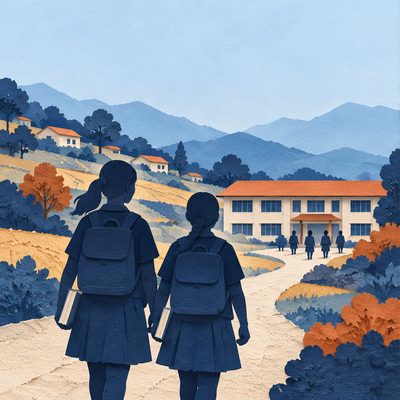

Reasons to Look Up
Reasons to Look Up

People & Community · Estimates to 2024
In Nepal, girls caught up.
Read the story + explore sources
People & Community · Estimates to 2024
In Nepal, girls caught up.
Read the story + explore sourcesThe story
For girls in Nepal, finishing the stage after primary school was once much less common than for boys. UNESCO’s GEM team reports 1990 timely completion estimates equivalent to 8 in 100 girls and 41 in 100 boys, allowing a few extra years beyond the expected finishing age. Its 2026 account reports a 2024 estimate of 89 in 100 for both girls and boys.
Education support expanded over that period. The World Bank’s account of Nepal’s School Sector Development Program describes targeted scholarships and improvements intended to help disadvantaged children stay in school. UNESCO also describes free textbooks through grade 12, expanded provision of later school grades, and improvements to school water and sanitation as parts of the wider effort.
Why it matters
The hopeful change concerns who gets to finish a school level. A disadvantage that once separated girls’ and boys’ completion rates is no longer visible in the rounded national lower-secondary estimates. That is meaningful progress, even while some children remain excluded.
It is also unfinished: UNESCO estimates upper-secondary completion at 44% for girls and 53% for boys. Equal rates at one level do not establish equality throughout education.
Evidence and limits
The estimates refer to 2024; the central reporting was published in 2026. These are national estimates, not records of 100 pictured children. Lower-secondary completion is distinct from enrolment, grades, learning outcomes and completing all of school.
UNESCO distinguishes timely completion, assessed among people 3–5 years above the intended completion age, from ultimate completion, which allows longer delays. The country narrative and figure introduce both measures. The carousel uses the GEM team’s explicitly paired timely estimates for girls and boys in 1990 and its separately dated, rounded 2024 findings. It does not use the country page’s different 13% ultimate estimate as the girls’ baseline, and it does not reconstruct an annual series.
The underlying linked country table could not be retrieved in this check. No numerical uncertainty intervals or reconstructed trend are claimed. The policy accounts support the existence of education efforts; they do not isolate the causal contribution of any one intervention. National averages can conceal disadvantage within groups. Programme reporting by a funder is not an independent impact audit.
Explore further
Image credits
Abstract, faceless paper-cut AI illustrations created for Reasons to Look Up using OpenAI image generation. They do not depict identified students or document a particular school. Nepal flag SVG from flag-icons, MIT licence; original flag geometry retained. Original data graphics reproduce attributed rounded report findings. The approved category and sunrise marks are reused. No third-party photograph is included.